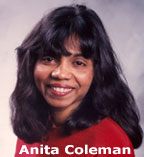

ALISE NEWS
Volume 2004, Issue 1
August 4th, 2004
Inside this Issue:
Arizona's Malone & Coleman to Edit JELIS
Budd, von Dran
Square off for ALISE
President Job
Callison, Julien Vie for
2005-2008 Director
Postition
ME++ Author to
Keynote 2005 ALISE Conference
Schools Approve New Institutional Dues
Structure
Faculty Invited to
Submit Research Posters
ALISE is pleased to announce that Drs. Cheryl Malone and Anita Coleman, University of Arizona School of Information Resources and Library Science, will co-edit the Journal of Education for Library and Information Science (JELIS). Malone and Coleman were selected by the Board of Directors in July based on recommendations from the search committee.
{kind=link}
Dr. Malone, Associate Professor, was pleased to learn of the selection, "I'm looking forward to co-editing JELIS at this dynamic time in LIS education. LIS educators can learn a great deal from each other, and JELIS is the ideal vehicle for sharing our research and experience."
At Arizona, Malone teaches information resources evaluation, government information, information literacy instruction, and social constructs of information. She holds an M.L.S. from Arizona and a Ph.D. in LIS from the University of Texas. Her research focuses on U.S. public library history and the construction of gender and race in the information professions. Malone is a recipient of the American Library Association Library History Round Table's Justin Winsor Prize and a winner of the ALISE Methodology Paper Competition.
{kind=link}
Dr. Coleman, Assistant Professor, was equally pleased about being named co-editor, “I look forward to invigorating, innovative, and productive interactions with the LIS community. Collectively we can harness the opportunities and chart a bright future for LIS.”
Coleman teaches courses in the knowledge organization track, such as organization of information, controlled vocabularies, and theory of classification. She also teaches scholarly communication and information seeking behaviors. Coleman has an M.L.I.S. from the University of Madras (India) and a Ph.D. in LIS from the University of Illinois at Urbana-Champaign. Her research includes the knowledge organization, representation of objects such as scientific models; information use behaviors, and scholarly communication. She is PI of DLIST, the Digital Library of Information Science and Technology, a global scholarly communication initiative that is building an LIS eprints repository.